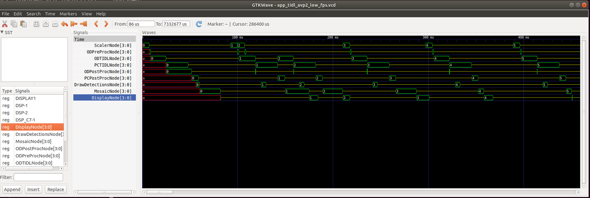
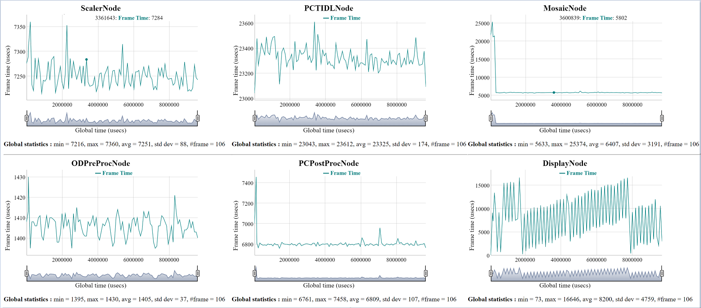

Built-in support
The tivxLogRtTraceEnable, tivxLogRtTraceExportToFile, tivxLogRtTraceDisable APIs provides the ability to log node start, node stop and other useful events to a shared memory. These events can then be written to a file and visualized to gain important insight into a graph execution. While events are being logged, the intrusion into node execution is minimal, hence logging these events does not change performance of the graph being monitored.
When logging is enabled, all node and target start/end events are captured and ready to be visualized. Furthermore, events from within specific built-in kernels (such as HWA and DMA start/stop events in VPAC_VISS) are also captured.
Adding custom events within interior of user kernels
In order to add custom even logging within user kernels, the tivxLogRtTraceKernelInstanceAddEvent API can be called from within the initialization callback, and the tivxLogRtTraceKernelInstanceRemoveEvent can be called from within the deinitialization callback on the host side of the user kernel. Then, within the target side callbacks (create, destroy, process, control), the tivxLogRtTraceKernelInstanceExeStart and tivxLogRtTraceKernelInstanceExeEnd APIs can be called at the appropriate points to trigger the appropriate log event.
How to enable rt-logging and visualization
To enable run-time event logging in your program do below,
- After graph verify but before graph execution, call tivxLogRtTraceEnable (graph) to enable event logging for that graph.
- Execute the graph as usual
- After graph executions have stopped, or periodically, call tivxLogRtTraceExportToFile (filename) to save event data to a file.
- After graph executions have stopped and before vxReleaseGraph, call tivxLogRtTraceDisable (graph) to disable run-time logging for that graph
To visualize the graph data do below,
- [ONE TIME ONLY] Install 'gtkwave' on your linux PC
- [ONE TIME ONLY] Build the tools for format converiosn by doing below
cd
tiovx/tools/tivx_log_rt
make
- Copy the event log .bin file, saved on EVM via tivxLogRtTraceExportToFile (filename), to a folder in your Linux PC.
- Generate .vcd file (Value Change Dump) file to visualize the events in gtkwave as below
tiovx/tools/tivx_log_rt/tivx_log_rt_2_vcd.out -i event_log.bin -o event_log.vcd
- Generate .html file to visualize per node frame level statistics as below
tiovx/tools/tivx_log_rt/tivx_log_rt_2_html.out -i event_log.bin -o event_log.html
- Open the .vcd file in gtkwave
- In gtkwave, drag and drop the 'signals' of interest from bottom left frame to center frame and visualize the 'signals' in the right frame.
- Open the .html file in web browser to visualize per node frame level statistics.
- Note
- The html files uses dygraphs.js from http://dygraphs.com/ so make sure your internet connectivity works fine
Sample outputs from app_tidl_avp2 demo
VCD View
- There are two types of 'signals' in this view, openVX nodes and CPUs / HW accelerators. The nodes are typically represented as bus [3:0], appended by *Node and the CPU / HW accelerators are represented as single bit values (either HIGH or LOW).
- Nodes are ScalarNode[3:0], ODPreProcNode[3:0], ODTODLNode[3:0] etc. and CPU / HW accelerators are DISPLAY1, DSP-1, DSP-2, DSP_C7-1 etc.
- The value of the node 0, 1, 2, 3 .. depicts which frame is bring processed. This is a relative number just to get a better understanding that when a particular node is processing frame 3, which frame number is being processed by the other nodes.

HTML View
- The HTML view gives more of a statistical data.

 1.8.14
1.8.14